Estimation experiment for probabilistically described system
In this example a ship is moving in x-y plane with the stationary observer at the origin of the plane, The ship is assumed to accelerate and decelerate randomly over time. The state 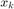 is given as 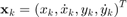, where 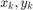 represent position of the ship and 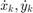 are corresponding velocities. The state dynamics is described by the following transition pdf
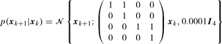
where 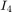 is the 4-by-4 identity matrix. The measurement of the model is the direction given by 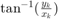 and the corresponding measurement pdf is given as
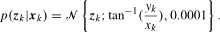
and the pdf of the initial state 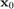 is
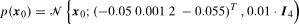
The classes necessary for description of this problem is depicted below.
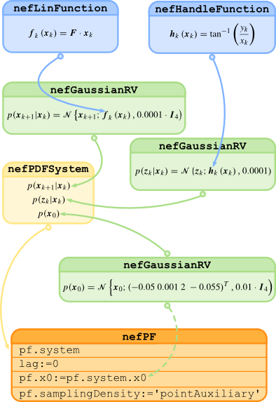
For specification of the system, the nefPDFSystem class will be used. First, the transition pdf is set using its mean and covariance matrix as
F = [1 1 0 0;0 1 0 0 ;0 0 1 1 ;0 0 0 1]; xMean = nefLinFunction(F,[],[]); xVariance = 0.0001*eye(4); xPdf = nefGaussianRV(xMean,xVariance);
Then, the measurement pdf is also given by its mean and variance as
mFun = @(x,u,v,t) atan(x(3)/x(1)); zMean = nefHandleFunction(mFun,[4 0 0 0]); zVariance = 0.0001; zPdf = nefGaussianRV(zMean,zVariance);
Now, the initial condition is specified as
x0Pdf = nefGaussianRV([-0.05 0.001 2 -0.055]',0.01*eye(4));
Consequently, the system is created using probabilistic description as
model = nefPDFSystem(xPdf,zPdf,x0Pdf);
and simulated using commands
nSteps=20; [z,x] = simulate(model,nSteps,[]);
where the measurement values are stored in z and values of the state in x. Finally, to estimate the state using the measurement 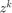, the auxiliary particle filter will be used. It will be built by a single command specifying system description (system), lag 0 and type of the sampling density:
pfEstimator = nefPF(model,'samplingDensity','pointAuxiliary');
Note that no other design parameters concerning the particle filter were specified and thus the default values were used, such as default sample size is 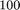 samples, systematic resampling executed at each time instant.
The actual estimation is issued by
[estimates] = estimate(pfEstimator,z,[]);
As a result, estimates of the filtering pdf 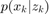 given by the empirical pdf nefEmpiricalRV are stored in the estimates.